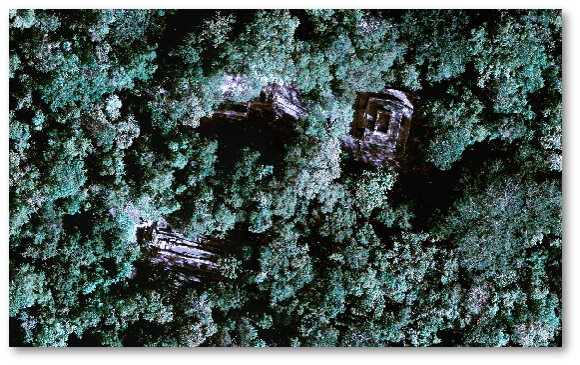
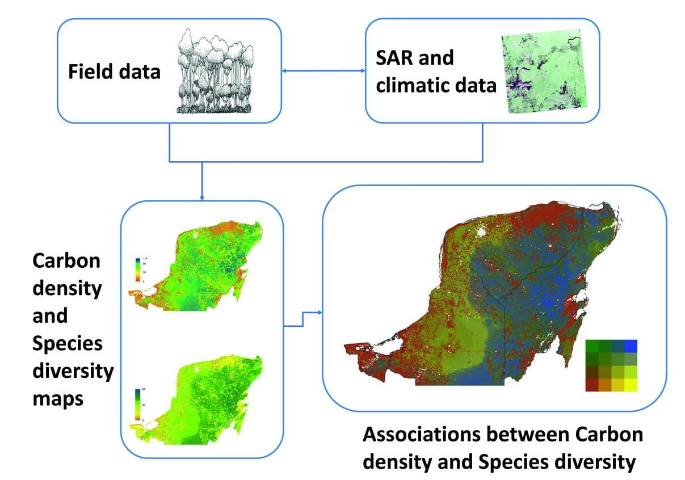

Proyectos Vigentes

- “Revalorización e interpretación del patrimonio biocultural para fortalecer el turismo comunitario: habilitando la red de senderos (T’i’it’kab bejo’ob) para la zona arqueológica Ek’ Balam”
- Periodo: 2026-2027.
- Fondos: Proyectos de Investigación Científica y Humanística en ejes estratégicos 2025.
- Responsable Técnico: Alejandra Alonso Olvera.
- Monto. $1’000,000.00 M.N
- “Monitoreo del cambio de cubierta/uso de suelo y degradación forestal mediante imágenes satelitales y análisis de series de tiempo en todo el territorio mexicano: desarrollo de métodos de análisis y de una plataforma de consulta interactiva.”
- Periodo: 2025-2027.
- Fondos: Ciencia de frontera 2025.
- Responsable Técnico: Jean Francois Raymond Marie Mas Caussel.
- Monto. $ 1,978,800.00 M.N
Proyectos Finalizados

- “Constraining the current and future carbon dynamics of the dry tropics (SECO)”
- Periodo: 2022-2024.
- Fondos: University of Edinburgh, School of Geosciences.
- Responsable Técnico: Dr. Casey Ryan and Dr. Kyle Dexter
- “El Impacto de megaproyectos en sistemas socio ecológicos desde una perspectiva transdisciplinaria: El programa de desarrollo integral en los territorios del Tren Maya”
- Periodo: 2021-2023.
- Fondos: PRONACE CONACYT.
- Responsable Técnico: Dr. Miguel Ángel Díaz Pérez.
- Monto. $6’000,000.00 M.N.
- “Estimación de la biomasa aérea en bosques tropicales de la Península de Yucatán, utilizando datos de campo y sensores remotos”
- Periodo: 2017-2021.
- Fondos: Ecometrica LTD, Agencia Espacial Británica.
- Responsable Técnico: Dr. Hernández-Stefanoni, J.L.
- Monto. $1’800,000.00 M.N.
- “Uso de biomasa leñosa como biocombustible sólido para la generación de energía eléctrica en zonas rurales” Clave de registro: 249581. Fondo sectorial CONACYT-SENER-sustentabilidad energética, convocatoria 2014-04.
- Periodo (2014-2017).
- Responsable Técnico del Proyecto: Dr. Gonzalo Canché Escamilla
- Monto: $ 2’000,000 M. N.
- “Establecimiento y funcionamiento de sitios de monitoreo intensivo de carbono en Redd+ del proyecto: fortalecimiento de la preparación para Redd+ en México y fomento de la cooperación Sur-Sur” CONAFOR-PNUD. Clave 7012400001.
- Responsables Técnicos: Drs. José Luis Andrade Torres y Juan Manuel Dupuy Rada.
- Periodo: enero de 2013 a junio de 2015.
- Monto: $ 2’279,855 M. N.
- “Reducing greenhouse gas emissions and improving forest management in Mexico” Servicio Forestal de Estados Unidos (USFS). Clave 70113.
- Responsable Técnico: Dr. José Luis Andrade Torres.
- Periodo: enero a diciembre de 2014.
- Monto: $ 242,558.00 M. N.
- “Effects of human-induced disturbance on the breeding success of the endemic endangered mexican sheartail hummingbird” National Geographic Committee for Research and Exploration. Clave 9145-12.
- Responsable Técnico: Dra. Eurídice Leyequién Abarca.
- Periodo: junio de 2012 a mayo de 2013.
- Monto: US $ 20,000.00 dólares.
- “Medición de flujos de carbono a escala de paisaje en México”
- Periodo: 2011-2013.
- Fondos: Servicio Forestal de Estados Unidos (USFS).($1’700,000.00 pesos).
- Responsable Técnico: Dr. J.L. Andrade Torres.
- “Estudio de la diversidad y distribución de las comunidades de aves y lepidópteros en paisajes de bosque seco tropical con diferente grado de perturbación y fragmentación en la Península de Yucatán, México”
- Periodo: 2011-2013.
- Fondos: Investigación Ciencia Básica SEP-CONACYT- 2009 ($850,000.00 pesos).
- Responsable Técnico: Dra. Leyequién Abarca, E.
- “Planeación sustentable del uso del suelo para maximizar actividades productivas y conservar la diversidad de plantas, aves e insectos en una selva mediana subcaducifolia”
- Periodo: 2009-2012.
- Fondos: Apoyado en la convocatoria de Fondo Mixto CONACYT-Yucatán 2009 ($1’719,000.00 pesos).
- Responsable Técnico: Dr. Hernández-Stefanoni, J.L.
- “Influencia de la configuración del paisaje sobre la diversidad y composición de comunidades vegetales en una selva mediana subcaducifolia”
- Periodo: 2009.
- Fondos: Apoyado en la convocatoria de SNI1-2008, CONACYT ($100,000.00 pesos).
- Responsable Técnico: Dr. Hernández-Stefanoni, J.L.
- “El rol de los patrones de distribución de la vegetación en las características estructurales del bosque”
- Periodo: 2008-2010.
- Fondos: Fiscales CICY.
- Responsable Técnico: Dr. Hernández-Stefanoni, J.L.